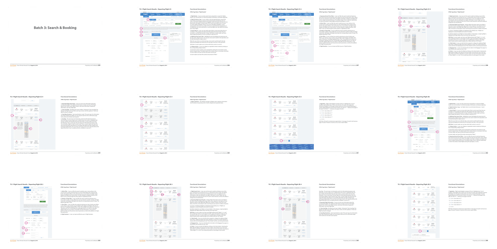

Chase Bank · UX Lead, via Noise NYC
Ultimate Rewards, redesigned for loyalty, ease, and delight.
As UX Lead at NYC agency Noise, I redesigned Chase's Ultimate Rewards into a premium, mobile-first experience — increasing engagement, simplifying redemption, and integrating with Chase's broader digital ecosystem.

UX strategy from the cardholder's point of view
I mapped the end-to-end cardholder journey, uncovering the major friction points in rewards redemption. After a design-thinking session with the team, I synthesized insights into actionable redesign strategies — streamlining flows to prioritize clarity, navigation, and faster redemption.

Premium visual execution, responsive by default
The interface elevated Chase's premium identity — refined visual elements, a sophisticated palette, intuitive interaction patterns — delivered as a fully responsive, accessible design system across desktop, tablet, and mobile, with mobile-first optimizations that drove a measurable lift in engagement.

Results
- Personalized offer discovery and streamlined redemption
- Measurable lift in mobile engagement
- Integrated into Chase's design system for scalable deployment across platforms
The reimagined platform made it significantly easier for cardholders to redeem points meaningfully — deeper loyalty at a pivotal moment for Chase's digital ecosystem.